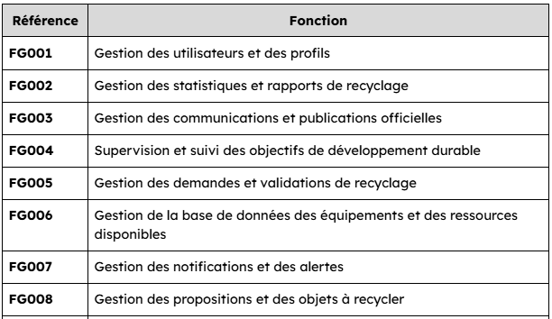
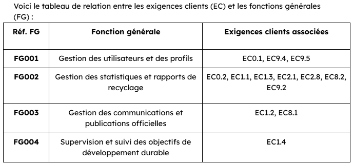

Compétence 1 — Partir des exigences et aller jusqu'à une application complète
R3.01 Développement web
R3.02 Développement efficace
R3.03 Analyse
R3.04 Qualité de développement
R3.11 Droit contrats et num.
AC1 — Élaborer & implémenter les spécifications fonctionnelles et non-fonctionnelles
| Non acquis |
- Exigences non comprises
- Manque de documents (pas de user stories, cas d'utilisation…)
- Fonctionnalités absentes par rapport au besoin client
|
| En cours d'acquisition |
- Spécifications partielles
- Critères d'acceptation incomplets ou peu exploitables
- Certaines contraintes non fonctionnelles oubliées (performance, sécurité…)
|
| Acquis |
- Spécifications complètes et structurées
- Besoins utilisateurs et techniques clairement traduits
- Critères d'acceptation validés par les tests
|
Preuves
Extrait de cahier de charges de la SAE3


User stories et critères d'acceptation
AC2 — Accessibilité & ergonomie
| Non acquis |
- Interface difficile ou impossible à utiliser
- Problèmes de lisibilité : contraste, labels, feedbacks absents
- Navigation incohérente
|
| En cours d'acquisition |
- Interface fonctionnelle mais peu intuitive
- Accessibilité partielle (ex : pas d'utilisation clavier)
- Responsive partiel ou pas testé
|
| Acquis |
- Interface fluide, intuitive et logique
- Respect de bonnes pratiques d'accessibilité
- Navigation claire avec retours visuels (feedback utilisateur)
|
AC3 — Conception & bonnes pratiques
| Non acquis |
- Code confus, non documenté
- Nom des variables peu clairs
- Pas de découpage logique → tout dans un seul fichier
|
| En cours d'acquisition |
- Architecture présente mais améliorable
- Quelques commentaires et conventions respectées
- Git utilisé mais désorganisé (commits flous)
|
| Acquis |
- Architecture propre (séparation des responsabilités)
- Code propre et lisible, documentation utile
- Git avec bonnes pratiques : branches, messages clairs
|
AC4 — Tests & validation
| Non acquis |
- Aucun test écrit ou exécuté
- Bugs non identifiés, pas d'analyse des écarts
|
| En cours d'acquisition |
- Tests uniquement sur fonctionnalités principales
- Bugs identifiés, quelques corrections
- Pas d'automatisation
|
| Acquis |
- Tests complets & analysés (unitaires + intégration)
- Automatisation ou script de tests
- Validation claire des écarts et corrections appliquées
|
Compétence 2 — Sélectionner les algorithmes adéquats
R3.01 Développement web
R3.02 Développement efficace
R3.03 Analyse
R3.06 Archi. Réseaux
R3.08 Probabilités
R3.09 Cryptographie
R3.12 Anglais
AC1 — Choisir des structures de données complexes adaptées au problème
| Non acquis |
- Les structures utilisées ne permettent pas de résoudre correctement le problème
- Les données sont dupliquées ou mal organisées
- Je choisis par habitude, sans réfléchir au besoin
|
| En cours d'acquisition |
- Je choisis une structure cohérente mais le choix n’est pas justifié
- J’utilise quelques structures avancées (Set, Map…)
- Je modifie une structure si elle pose un souci
|
| Acquis |
- Je compare plusieurs structures avant de choisir
- Mon choix prend en compte la performance et la mémoire
- Je peux expliquer pourquoi ma structure est la meilleure pour ce cas
|
AC2 — Utiliser des techniques algorithmiques adaptées pour des problèmes complexes (par ex. recherche opérationnelle, méthodes arborescentes, optimisation globale, intelligence artificielle...)
| Non acquis |
- Les résultats sont faux ou incomplets
- L’algorithme ne correspond pas au type de problème
- J’applique une solution “au hasard”
|
| En cours d'acquisition |
- L’algorithme fonctionne mais est trop lent ou lourd
- Je fais quelques optimisations sans mesure concrète
- J’utilise parfois des algorithmes appris en cours
|
| Acquis |
- Je choisis un algorithme en fonction des contraintes (temps, mémoire, structure)
- J’analyse la complexité Big-O
- Je propose des améliorations pertinentes
|
AC3 — Comprendre les enjeux et moyens de sécurisation des données et du code
| Non acquis |
- Les données ne sont pas vérifiées avant traitement
- Le programme peut planter ou être exploité
- Pas de gestion des entrées malveillantes
|
| En cours d'acquisition |
- Je filtre certaines données mais pas toutes
- Gestion d’erreur partielle
- Mots de passe ou données sensibles peu protégés
|
| Acquis |
- Vérification de toutes les données avant utilisation
- Traitement sécurisé contre les injections et débordements
- Traçabilité et gestion correcte des erreurs
|
AC4 — Évaluer l’impact environnemental et sociétal des solutions proposées
| Non acquis |
- Je ne prends pas en compte les ressources utilisées
- L’application gaspille CPU / mémoire
- Pas de réflexion sur l’impact des choix techniques
|
| En cours d'acquisition |
- Quelques optimisations mais sans justification
- Impact évoqué après coup
- Améliorations ponctuelles
|
| Acquis |
- Optimisation pensée dès la conception
- Solution plus économe en ressources
- Documentation des impacts réduits sur l’environnement ou l’utilisation
|
Compétence 4 — Optimiser une base de données et assurer sa sécurité
R3.01 Développement web
R3.07 SQL et programmation
R3.08 Probabilités
R3.09 Cryptographie
R3.10 Management SI
R3.11 Droit contrats et num.
AC1 — Concevoir une base de données cohérente et optimisée
| Non acquis |
- Structure de la base incorrecte (relations erronées)
- Données redondantes ou anomalies d’intégrité
- Pas de contraintes (clé primaire, clé étrangère...)
|
| En cours d'acquisition |
- Modèle globalement correct mais à améliorer
- Normalisation partielle ou non contrôlée
- Certaines contraintes manquent ou sont mal appliquées
|
| Acquis |
- Modèle clair, logique, normalisé et validé
- Contraintes d’intégrité bien définies
- Structure pensée pour la performance et l’évolution
|
AC2 — Manipuler les données avec des requêtes SQL
| Non acquis |
- Requêtes mal écrites ou incorrectes
- Résultats faux ou incomplets
- Problèmes de jointures récurrents
|
| En cours d'acquisition |
- Requêtes correctes mais pas optimisées
- Fonctionnalités avancées SQL partiellement maîtrisées
- Vérification des résultats insuffisante
|
| Acquis |
- Requêtes SQL efficaces pour tous les besoins du projet
- Complexité, jointures et agrégations maîtrisées
- Résultats vérifiés et documentés
|
AC3 — Connecter proprement une application à la base
| Non acquis |
- L’application ne communique pas avec la base de données
- Requêtes directement dans l’interface
- Plantages lors des accès à la base
|
| En cours d'acquisition |
- Connexion fonctionnelle mais architecture peu claire
- Gestion des erreurs limitée
- Configuration pas sécurisée ou mal structurée
|
| Acquis |
- Connexion stable et architecture claire (DAO / Repository / ORM)
- Paramètres de base dans des fichiers de configuration
- Logs et erreurs bien gérés
|
AC4 — Sécuriser la base et les échanges
| Non acquis |
- Mots de passe en clair
- Vulnérable aux injections SQL
- Droits trop ouverts sur la base
|
| En cours d'acquisition |
- Requêtes préparées mais pas partout
- Politique de rôles partielle
- Stockage sécurisé mais améliorations possibles
|
| Acquis |
- Requêtes préparées systématiquement
- Gestion des droits par rôle minimale mais efficace
- Données sensibles protégées et journalisation des accès
|
Compétence 5 — Appliquer une démarche de suivi de projet
R3.03 Analyse
R3.04 Qualité de développement
R3.10 Management SI
R3.11 Droit contrats et num.
R3.12 Anglais
R3.13 Comm. pro.
AC1 — Comprendre et reformuler les besoins métier et utilisateurs
| Non acquis |
- Je ne comprends pas correctement les besoins du client
- Je ne sais pas reformuler les attentes clairement
- Je développe des fonctionnalités inutiles ou hors-sujet
|
| En cours d'acquisition |
- Je comprends globalement les besoins mais il manque des précisions
- Je traduis seulement une partie en fonctionnalités
- Je fais des hypothèses sans validation systématique
|
| Acquis |
- Je sais expliquer clairement les attentes du client
- Je transforme les besoins en tâches concrètes
- Je fais valider la compréhension avant de développer
|
AC2 — Planifier, organiser et suivre l’avancement du projet
| Non acquis |
- Aucune organisation : pas de planification
- Tâches attribuées au hasard
- Délais jamais respectés
|
| En cours d'acquisition |
- Organisation de base mais pas bien maintenue
- Tâches mises à jour de façon irrégulière
- Difficulté à anticiper ou réagir aux problèmes
|
| Acquis |
- Planification claire et mise à jour régulière
- Priorités bien gérées selon les besoins et risques
- Suivi d’avancement transparent pour toute l’équipe
|
AC3 — Communiquer l’avancement et les résultats du projet
| Non acquis |
- Peu ou pas de communication avec le client ou l’équipe
- Docs ou supports de présentation absents
- Les décisions prises ne sont pas tracées
|
| En cours d'acquisition |
- Communication occasionnelle mais incomplète
- Supports présents mais peu structurés
- Les informations importantes ne sont pas toujours remontées
|
| Acquis |
- Communication régulière, claire et adaptée au public
- Supports de présentation structurés et réutilisables
- Décisions, risques et avancement tracés et partagés
|
Compétence 6 — Mettre en place une stratégie de tests et d’assurance qualité
R3.04 Qualité de développement
R3.10 Management SI
R3.12 Anglais
R3.13 Comm. pro.
R3.14 PPP
AC1 — Se positionner dans l’équipe
| Non acquis |
- Je ne participe pas aux réunions d’organisation
- Je ne prends pas connaissance des documents de projet
- Je ne respecte pas les décisions prises par le groupe
|
| En cours d'acquisition |
- Je réalise mes tâches mais sans tenir compte du planning global
- Je connais mon poste mais pas celui des autres
- Je m’adapte difficilement aux changements de consignes
|
| Acquis |
- Je comprends le fonctionnement général de l’équipe
- Je respecte le cadre de travail défini collectivement
- Je sais comment mon travail impacte celui des autres
|
AC2 — Collaborer et communiquer efficacement dans l’équipe
| Non acquis |
- Je travaille de manière isolée sans informer les autres
- Je ne réponds pas ou peu aux messages / demandes
- Les informations que je donne sont incomplètes ou confuses
|
| En cours d'acquisition |
- Je communique mais pas toujours au bon moment ou au bon format
- Je demande de l’aide mais sans toujours expliquer clairement le problème
- Certains malentendus persistent dans l’équipe
|
| Acquis |
- Je partage régulièrement l’état d’avancement de mon travail
- Je m’exprime de façon claire, adaptée et constructive
- Je facilite la circulation des informations dans l’équipe
|
AC3 — Contribuer à l’amélioration continue de l’équipe
| Non acquis |
- Je ne participe pas aux retours d’expérience
- Je rejette les critiques ou remarques
- Je ne propose pas d’idées d’amélioration
|
| En cours d'acquisition |
- J’accepte les retours mais je change peu ma manière de travailler
- Je propose parfois des idées mais sans suivi
- Les bonnes pratiques ne sont pas toujours appliquées
|
| Acquis |
- Je participe activement aux bilans et rétrospectives
- Je propose et applique des améliorations concrètes
- J’encourage le partage de bonnes pratiques dans l’équipe
|
AC4 — Adopter une posture professionnelle responsable
| Non acquis |
- Je ne respecte pas les règles ou consignes du projet
- Je rends mon travail en retard sans prévenir
- Je ne prends pas en compte les impacts de mes choix (qualité, délais, équipe)
|
| En cours d'acquisition |
- Je respecte globalement le cadre mais avec des oublis ponctuels
- Je préviens parfois en cas de problème mais trop tard
- Je commence à mesurer les conséquences de mes décisions
|
| Acquis |
- Je respecte les engagements pris et le cadre de travail
- Je signale rapidement les difficultés et propose des solutions
- Je prends en compte les impacts techniques, humains et organisationnels
|